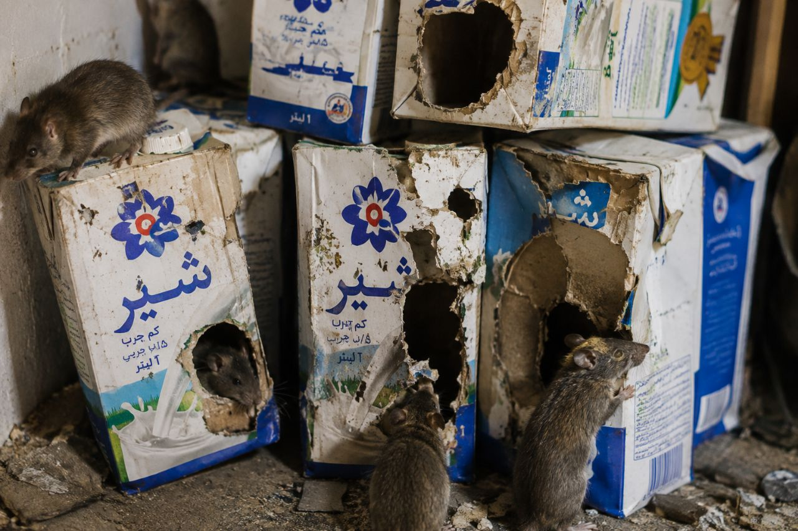
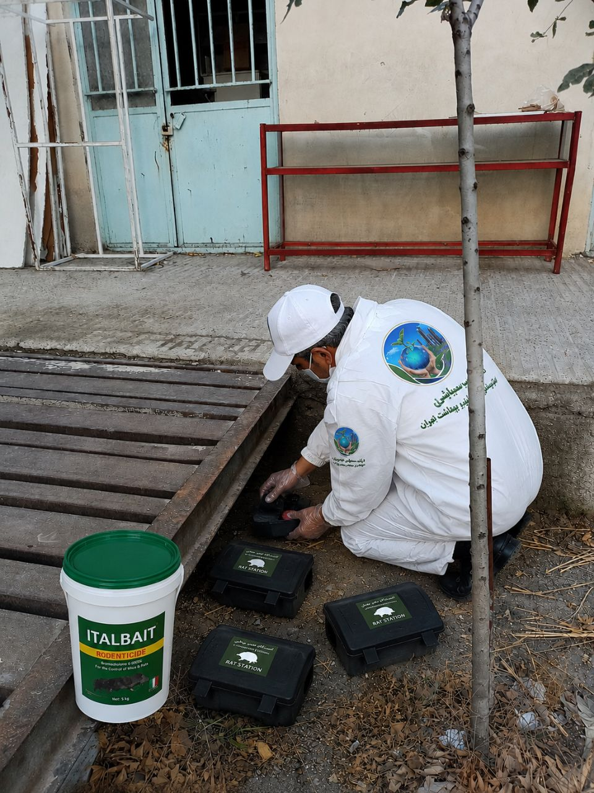
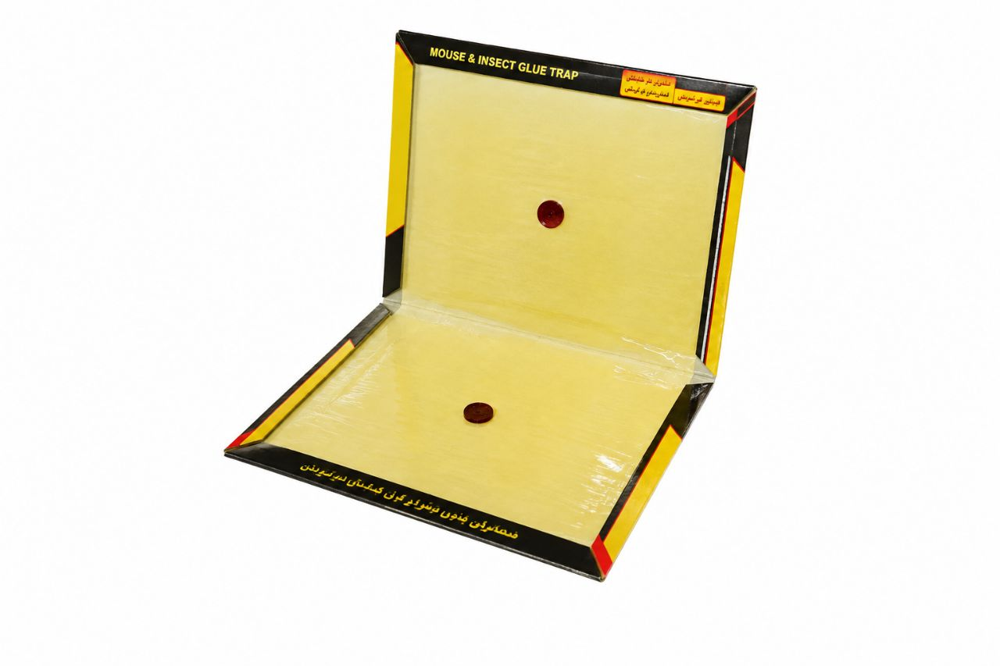

آیا تا به حال صدای خراشیدن در دیوارهای خانه را در نیمههای شب شنیدهاید؟ یا آثار جویده شده روی بستههای مواد غذایی یا کابلهای برق را مشاهده کردهاید؟ اینها میتوانند نشانههای حضور یک مهمان ناخوانده و خطرناک در خانه شما باشند: موش.

موشها از جمله قدیمیترین و مقاومترین آفات همزیست با انسان هستند که نهتنها آرامش را از شما میگیرند، بلکه میتوانند خسارات جبرانناپذیری به سلامت، اموال و حتی ساختار ساختمان شما وارد کنند. برخلاف تصور رایج، موشها فقط در محیطهای کثیف زندگی نمیکنند؛ آنها به دنبال سه چیز ساده هستند: غذا، آب و سرپناه، و هر خانهای میتواند این سه مورد را در اختیارشان بگذارد.
در این مقاله جامع و تخصصی، شما را با انواع موشهای رایج در ایران، نشانههای آلودگی، خطرات و عوارض حضور آنها، و مهمتر از همه، روشهای اصولی و تخصصی طعمهگذاری و کنترل موش آشنا میکنیم. اگر شما هم در تهران یا سایر شهرهای ایران با این جوندگان موذی دست و پنجه نرم میکنید، این مقاله راهنمای کامل شما برای نجات خانهتان خواهد بود.
موشها پستاندارانی از راسته جوندگان (Rodentia) هستند که با داشتن یک جفت دندان پیشین در هر فک که رشد دائمی دارند، شناسایی میشوند. این رشد دائمی باعث میشود آنها همواره در حال جویدن اشیاء سخت برای ساییدن و تیز نگه داشتن دندانهای خود باشند. به همین دلیل است که به کابلهای برق، لولهها و حتی سازههای ساختمانی آسیب میزنند.
| ویژگی | توضیح |
|---|---|
| دوره بارداری | بسیار کوتاه (حدود ۳ هفته) |
| تعداد زاد و ولد در سال | تا ۱۰ بار |
| تعداد نوزاد در هر زایمان | ۴ تا ۱۲ عدد |
| طول عمر | معمولاً کمتر از یک سال در طبیعت |
| فعالیت | غالباً شبزی |
| رژیم غذایی | همهچیزخوار، با تمایل به دانهها، میوهها، حشرات و مواد غذایی انسان |

تشخیص زودهنگام وجود موشها میتواند از یک آلودگی کوچک به یک بحران بزرگ جلوگیری کند. این نشانهها را جدی بگیرید:

| نوع خطر | توضیح |
|---|---|
| انتقال بیماری | ناقل بیماریهای خطرناکی مانند سالمونلا (مسمومیت غذایی)، طاعون، هانتاویروس، لپتوسپیروز و تب گزش. |
| آلودهسازی مواد غذایی | با عبور از روی مواد غذایی، آنها را با ادرار، مدفوع و باکتریهای خود آلوده میکنند. |
| آسیب به سیمکشی و تأسیسات | جویدن کابلهای برق میتواند باعث اتصالی، آتشسوزی و خرابی لوازم برقی شود. |
| آسیب به سازه ساختمان | با حفر تونل در دیوارها، کفها و فونداسیون، به ساختار ساختمان آسیب میرسانند. |
| خسارت به وسایل و اثاثیه | جویدن مبلمان، فرش، لباس، کتاب و سایر وسایل. |
| ایجاد آلرژی و آسم | گرد و غبار حاصل از مدفوع و ادرار موش میتواند باعث تشدید آلرژی و آسم شود. |
| آسیبهای روحی و روانی | حضور موش در خانه میتواند باعث استرس، اضطراب و بیخوابی شود. |
| خسارت به خودرو | موشها با نفوذ به خودروها، به سیمکشی و عایقها آسیب میرسانند. |
کنترل موشها نیازمند یک رویکرد جامع و چندمرحلهای است. برای ریشهکنی قطعی، باید از ترکیبی از روشها استفاده کرد. در شرکت سمپاشی نانوفناوران، از روش مدیریت تلفیقی آفات (IPM) برای کنترل موش استفاده میکنیم که شامل مراحل زیر است:
اولین و مهمترین گام، شناسایی نوع موش، وسعت آلودگی و نقاط ورودی و لانههای آنها است. کارشناسان ما با بررسی دقیق محیط، موارد زیر را مشخص میکنند:
موشها به خانه شما جذب میشوند، زیرا غذا، آب و سرپناه در آن پیدا میکنند. با رعایت نکات بهداشتی، محیط را برای آنها غیرجذاب کنید:

طعمهگذاری یکی از مؤثرترین روشها برای کنترل جمعیت موشها است. در این روش از سموم ضد انعقادی (آنتیکواگولانت) استفاده میشود که با ایجاد اختلال در انعقاد خون، باعث مرگ تدریجی موش میشوند.
| نوع سم | مثال | توضیح |
|---|---|---|
| سموم حاد | فسفر دوزنگ (زینک فسفاید) | یکبار مصرف و بسیار سریعالاثر، اما خطرناکتر |
| سموم مزمن (آنتیکواگولانت) | برودیفاکوم، وارفارین، راکومین | نیاز به مصرف چند روزه دارد و بسیار مؤثرتر و ایمنتر است |
تلهگذاری یک روش مکمل و مؤثر است. انواع تلهها عبارتند از:

برای افزایش اثربخشی تلهها، باید آنها را در مسیرهای تردد موش قرار داد و از طعمههای جذاب مانند کره بادامزمینی یا پنیر استفاده کرد.
پس از کاهش جمعیت موشها، باید تمام نقاط ورودی آنها را مسدود کنید:
با رعایت این نکات ساده، میتوانید از بازگشت مجدد موشها جلوگیری کنید:
| عامل | تأثیر بر هزینه |
|---|---|
| مساحت و نوع مکان | منازل مسکونی، انبارها، رستورانها و مراکز صنعتی هزینههای متفاوتی دارند. |
| شدت آلودگی | آلودگی شدید نیاز به عملیات بیشتر و زمانبرتری دارد. |
| نوع روش | طعمهگذاری، تلهگذاری یا ترکیبی از روشها. |
| دسترسی به نقاط آلوده | در صورت نیاز به عملیات در سقف کاذب یا دیوارها، هزینه افزایش مییابد. |
| تعداد جلسات | معمولاً یک جلسه کافی است، اما در موارد شدید ممکن است نیاز به بازدید مجدد باشد. |
💡 توصیه: برای دریافت مشاوره رایگان و استعلام دقیق هزینه، با کارشناسان ما تماس بگیرید.
سموم و طعمههای استفادهشده توسط شرکت نانوفناوران با رعایت کامل استانداردهای بهداشتی در نقاط غیرقابل دسترس قرار داده میشوند. با این حال، همیشه باید احتیاط کرد و از تماس کودکان و حیوانات با طعمهها جلوگیری کرد.
بسته به نوع سم، بین ۳ تا ۱۰ روز طول میکشد تا آثار طعمهگذاری نمایان شود. سموم ضد انعقادی بهتدریج عمل میکنند و معمولاً بعد از ۵ تا ۷ روز موشها از بین میروند.
بله، در صورت استفاده مکرر از یک نوع سم، ممکن است موشها نسبت به آن مقاوم شوند. به همین دلیل، کارشناسان ما از ترکیب و چرخش سموم مختلف استفاده میکنند.
استفاده از سموم و طعمههای خانگی معمولاً مؤثر نیست و ممکن است خطرناک باشد. تشخیص نوع موش، شناسایی لانه و انتخاب سم مناسب نیاز به تخصص دارد. همچنین استفاده نادرست از سموم میتواند برای سلامتی خطرناک باشد.
خیر، موشها در تمام فصول سال به دنبال غذا و سرپناه هستند، اما در فصول سرد به دلیل کاهش منابع غذایی در طبیعت، بیشتر به سمت ساختمانها میآیند.
موشها یکی از مقاومترین و خطرناکترین آفات خانگی هستند که بدون کمک متخصصان، ریشهکنی کامل آنها تقریباً غیرممکن است. این جوندگان موذی نهتنها به سلامت شما آسیب میرسانند، بلکه خسارات مالی سنگینی نیز به بار میآورند.
شرکت سمپاشی نانوفناوران با بیش از ۲۰ سال تجربه و استفاده از پیشرفتهترین روشهای طعمهگذاری و کنترل جوندگان، آماده ارائه خدمات تخصصی و تضمینی به شماست. تیم کارشناسان ما با استفاده از سموم استاندارد و تجهیزات مدرن، موشها را بهطور کامل و قطعی از منزل یا محل کار شما حذف میکنند.
🚀 همین حالا اقدام کنید:
📞 تماس فوری: ۰۹۱۲۰۷۰۵۷۴۶
💬 درخواست مشاوره رایگان: از طریق واتساپ یا ایتا
🔗 مشاهده سایر خدمات: کنترل آفات مسکونی